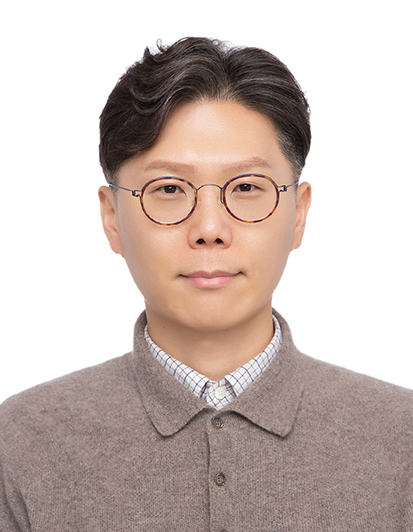

2025
SCI(E) · 2025

근로복지공단 재활의학연구센터에서 산재 노동자의 재활 및 직업복귀를 위한 연구를 수행하고 있습니다. 물리치료학을 기반으로 뇌손상 재활, 근골격계질환, 보조공학, 절단 재활 등 다양한 영역에서 근거 중심의 연구를 이어오고 있습니다.
I am a principal researcher at the Rehabilitation Medicine Research Center, COMWEL. With a background in physical therapy (Ph.D.), my research spans return-to-work interventions, brain injury rehabilitation, musculoskeletal disorders, and assistive technology for injured workers.
가천대학교 길병원 재활의학과에서 11년간 임상 경험을 쌓은 후, 2019년부터 근로복지공단 재활의학연구센터에서 산재 노동자의 재활 성과 향상을 위한 연구에 매진하고 있습니다.
연구 분야 · Research Areas
ORCID iD↗학력 · Education
경력 · Experience
급성 뇌경색 환자를 대상으로 HT047의 임상적 유효성과 안전성을 평가하는 임상시험 연구에 참여하였습니다.
진행성 암환자의 근감소증 예방 및 개선을 위한 저항성 운동 프로그램의 효과를 검증하는 연구입니다.
절단 및 마비 장애인이 스스로 건강을 관리할 수 있는 스마트 헬스케어 시스템을 개발합니다.
경량 프레임 기반의 모듈형 전동휠체어를 개발하여 장애인의 이동 편의성과 생활 자립도를 향상시킵니다.
수동·자동·능동 구동을 독립적으로 선택할 수 있는 소형유압 댐퍼 기반의 대퇴절단자용 하이브리드 구동모듈을 개발합니다.
상지 장애인이 보다 편리하게 조작할 수 있는 지능형 휠체어 시스템을 개발하여 이동 자립성을 높입니다.